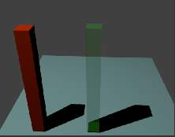
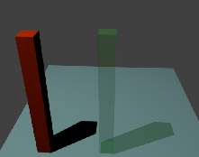
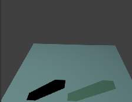
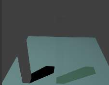

Shadows¶
The shadows that appear in a scene are affected by a combination of the layout of objects, the shape of the objects, the materials of the objects, and the lighting. In Blender, the Display Mode (Single 纹理, Multitexture,or GLSL) also affects the appearance of shadows. See Shadows for a more complete description of this subject.
Tip
Shadows in 3D mode
To see shadows in 3D (textured) mode, you must have switched to GLSL mode before making any materials. In Multi纹理 mode, shadows only appear in the rendered image: none of these can be seen in the preview image.
Shadow Panel.
The Shadow panel in the Materials Properties editor (see Fig. Shadow Panel.) controls the effects that the material can have on the shadows that appear in the scene. The various properties are described in the sections below.
Scene with all shadow properties off.
Options¶
The following properties can be set for each individual material with which objects in the scene are shaded. The effects are illustrated with rendered images for a simple scene (Fig. Scene with all shadow properties off.) consisting of two “posts”, one with a red (totally non-transparent) material; one green (partially transparent) material, set up on a light blue plane to receive the shadows. The illustrations were all taken in Blender 渲染 engine, with Multitexture mode.
Shadow Receiving Object Material¶
The following options affect the material that receives shadows:
- Receive
- Allows this material to receive full-intensity shadows (Fig. Plane - Receive.).
- Receive Transparent
- Allows this material to receive shadows whose intensity is modified by the transparency and color of the shadow-casting object (Fig. Plane - Receive + Receive Transparency.).

Plane - Receive. |

Plane - Receive + Receive Transparency. |
Shadow Casting Object Material¶
The following options affect the material that casts shadows:
- Cast Only
- Material appears transparent, but it still casts shadows (Fig. Posts - Cast Only.).
- Casting Alpha
- Todo.
- Shadows Only
- Material appears transparent except for where it receives shadows from other objects, and also it retains its own transparency (Fig. Posts - Shadows Only.). Note the faint image of the partly-transparent post.
- Shadow and Distance
- Todo.

Posts - Cast Only. |

Posts - Shadows Only. |
Buffered Shadow Options¶
In addition to the shadow options described above, there are further material properties which control buffered shadow features. See section on Spot Buffered Shadows for further discussion of these techniques.
- Cast Buffer Shadow
- Casts shadows from shadow buffer lamps.
- Buffer Bias
- Multiplication factor for Buffer shadows (0 = ignore)
- Auto Ray Bias
- Prevent raytraced shadow errors on surfaces with smooth shaded normals.
- Ray Bias
- Bias value to be used.
- Cast Approximate
- Allow this material to cast shadows when using approximate ambient occlusion.